Data & Automation
PythonPandasExcelOpenPyXL
DATA ANALYST · FULL-STACK DASHBOARD DEVELOPER
I work across data processing, databases, APIs and interactive dashboards — building practical solutions that help teams understand and manage their data.
01 / ABOUT
I’m Alok, a Data Analyst with hands-on experience building data-driven applications and business dashboards. My work brings together Python, SQL, Oracle Database, FastAPI and React.js.
In my current role, I independently developed two regulatory dashboards. I built the flow from weekly Excel data ingestion into Oracle through Python, to API development and interactive dashboard views.
TOOLKIT
Technologies used across data workflows, database integration and application development.
02 / SELECTED WORK
Real dashboards built to make operational data accessible and actionable. Click any screenshot to view it full size.
Two dashboards built for regulatory operations: a proposal reconciliation dashboard and a DERC query management dashboard, covering 1,446 proposals, 47 DPRs and 101 regulator queries.
oracledb.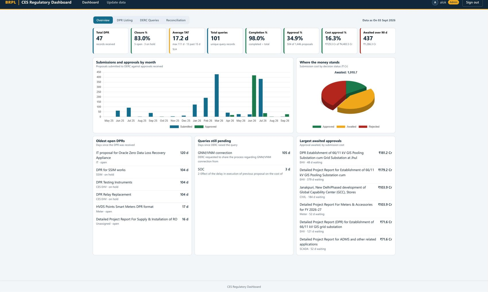
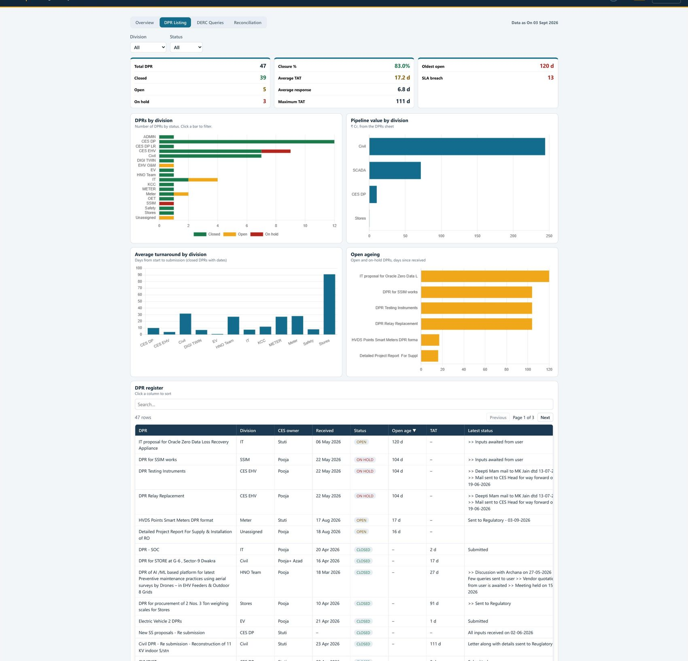
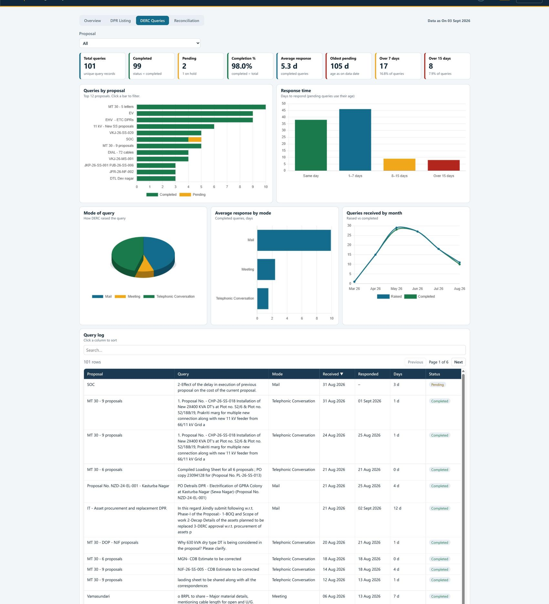
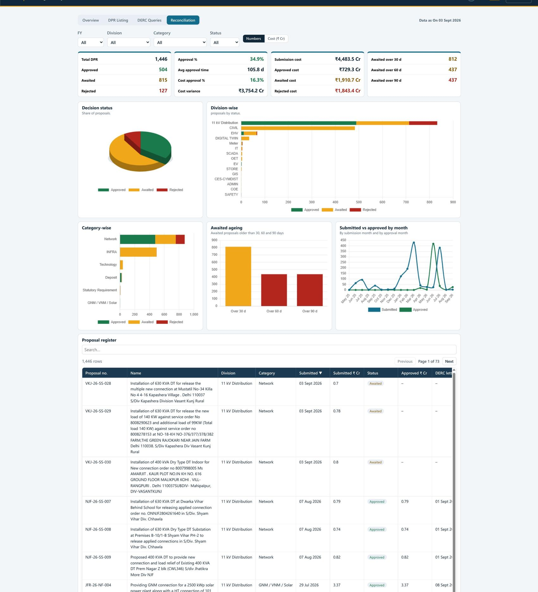
A six-view dashboard that follows 2 lakh+ new connection applications from acceptance to meter energisation, with service-level (SLA) tracking at every stage.
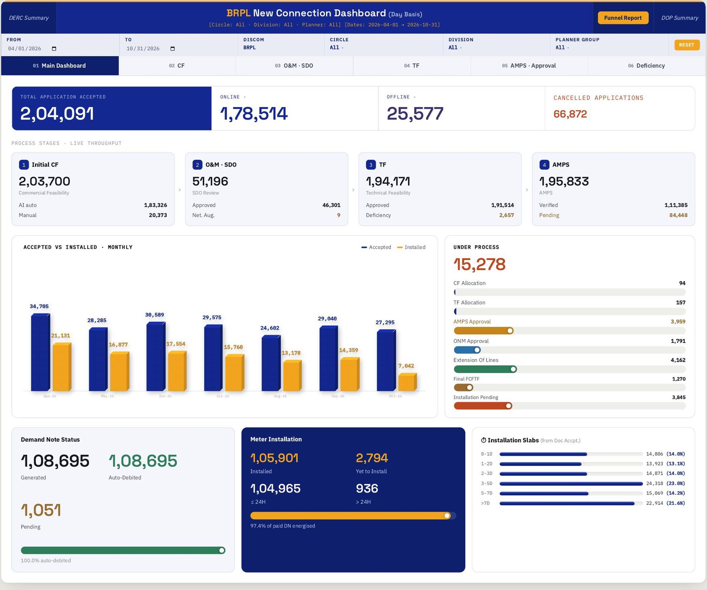
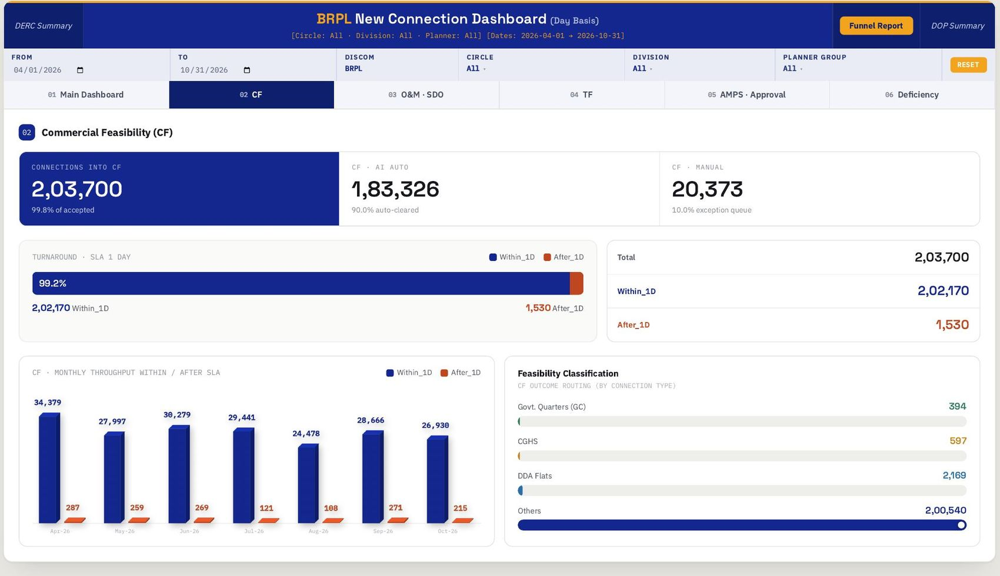
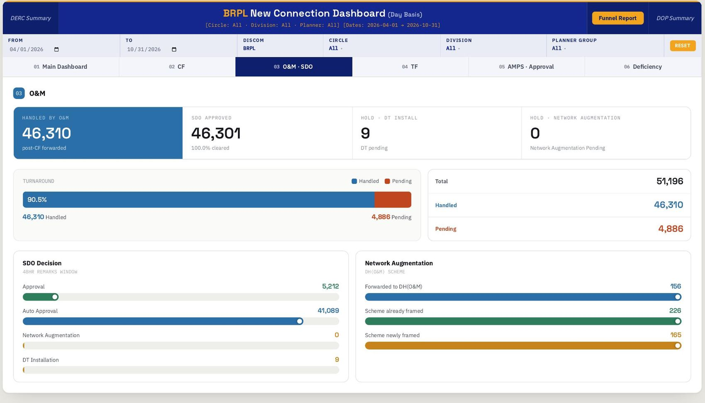
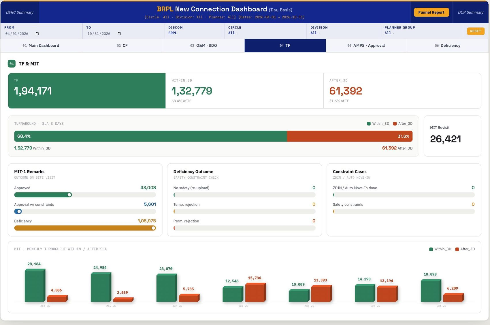
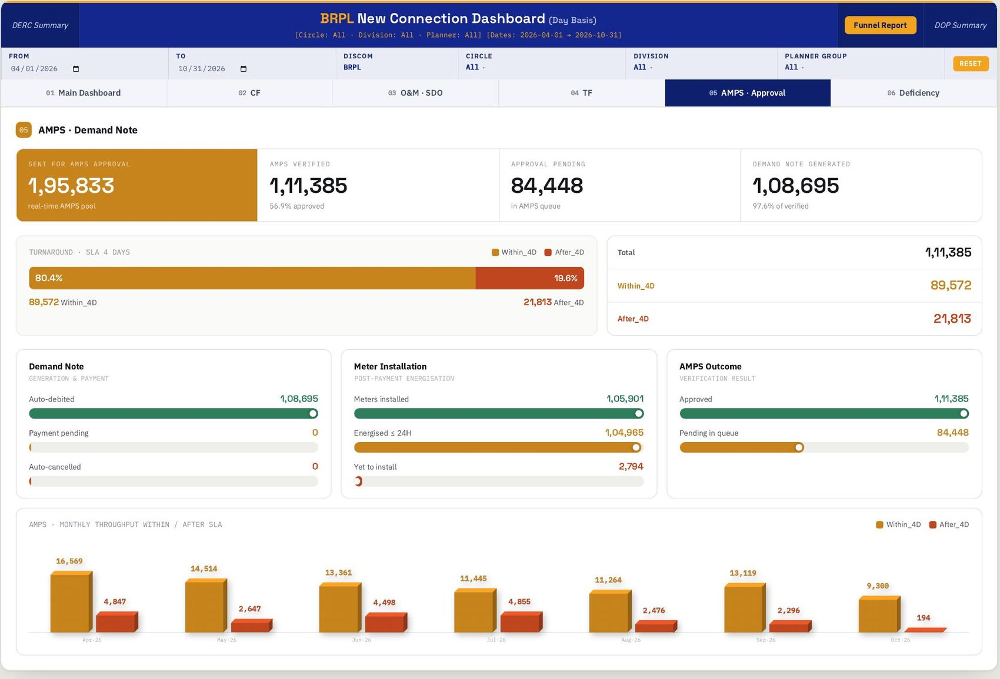
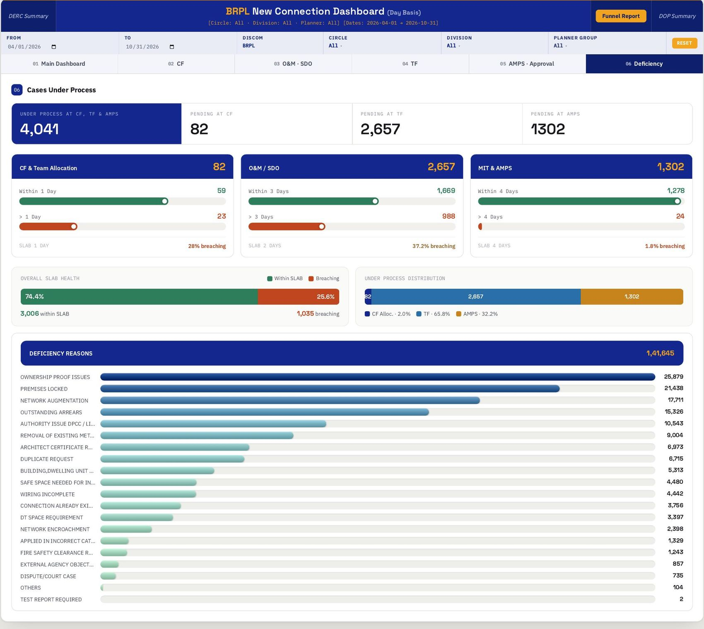
A suite of 16 Tableau dashboards for power demand, supply, management reporting, merit-order dispatch and battery storage, linked from one landing page.
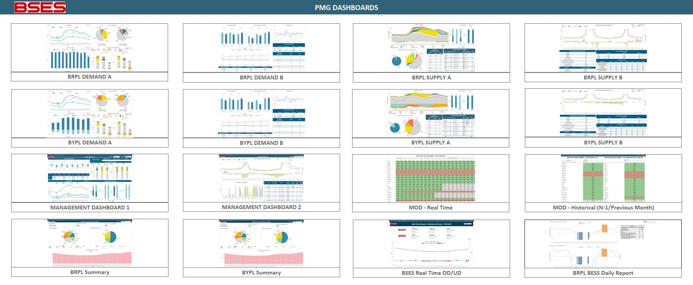
Monitoring dashboards that show whether data feeds behind the reports are updating properly, so a stalled feed is spotted early.
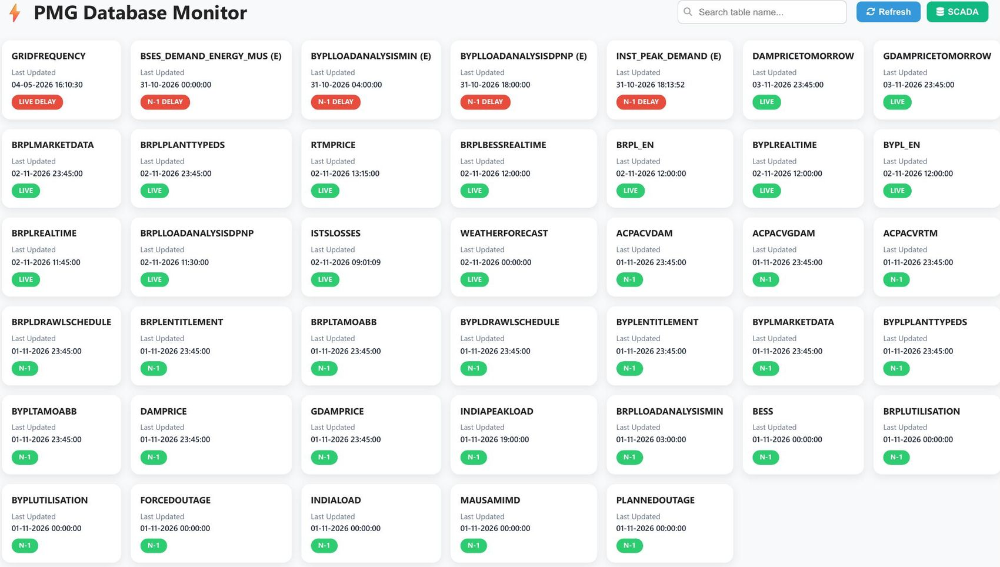
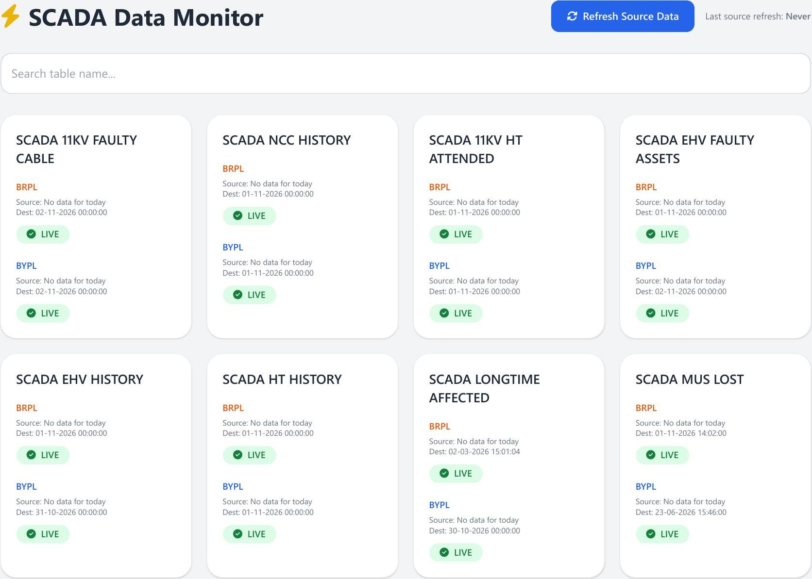
Screenshots are from internal dashboards built in my current role.
03 / HOW I WORK
04 / CONTACT
Interested in data analytics, automation or dashboard development? Feel free to connect.